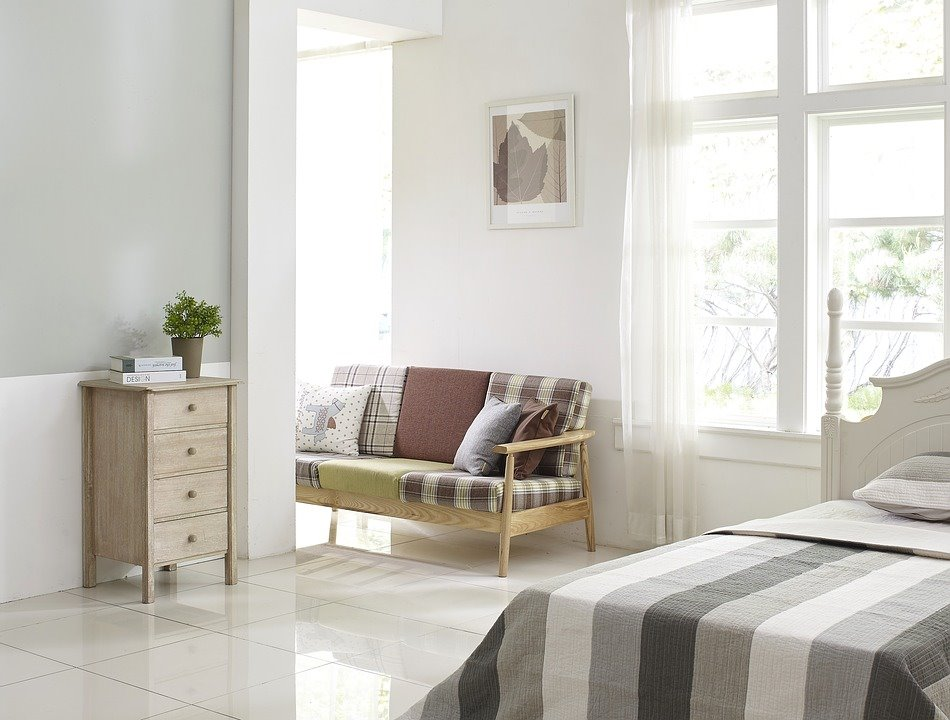

일본 원룸 자취
초기비용이 넉넉하다면, 혼자 여유로운 생활을 할 수 있는 원룸.
KRW 600,000 ~ 1,300,000/월
(신주쿠 8평대 원룸 기준, 보증금/ 관리비 등 별도 ,2019년 기준) 가장 프라이빗한 공간을 가질 수 있는 것이 장점. 하지만 한국과 달리 모든 가구와 전자제품을 구매해야 하므로 초기비용이 많이 든다는 것이 큰 단점이다. 또한 직접 일본 부동산을 통해 집을 구해야하기 때문에 일본어가 서툴다면 구하기 힘들 수 있다. 최근에는 이런 사람들을 위해 일본 부동산과 연결해 집을 대신 알아봐 주는 사이트가 있다. 사이트는 아래 주소 참고. 제로카리 https://zerocari.jimdo.com 재팬홈즈 http://japan-homes.com
일본 쉐어하우스
다른 사람과 함께 한 집에서 생활하는 쉐어하우스
KRW 200,000 ~ 700,000/월
(신주쿠 기준, 보증금/ 관리비 등 별도, 2019년 기준) 많은 일본 워홀러들이 선호하는 일본 쉐어하우스. 가전제품과 가구가 기본적으로 배치되어 있어 초기 정착 비용을 비교적 아낄 수 있다는 것이 큰 장점이다. 대신에 쉐어하우스는 집, 형태에따라 다르지만 기본적으로 다른 사람과 함께 쓰는 공용 공간(주방, 화장실 등)이 있어 다른 사람과의 생활이 불가피하다. 전문적으로 쉐어하우스를 운영하는 업체 사이트도 있다. 사이트는 아래 주소 참고. 오크하우스 https://www.oakhouse.jp/ GG하우스 http://gghouse.co.jp/ko/ 히츠지부동산 https://www.hituji.jp/ 사쿠라하우스 http://www.sakura-h="40px"om
일본 기숙사
일본에서 가장 저렴하게 지낼 수 있는 방법

KRW 600,000 ~ 900,000/월 (2019년)
사용 인원에 따라 상이함 학교, 학원, 회사에서 제공해주는 게 대부분이다. 입주가 쉽고 안전하며 초기비용이 가장 저렴한 것이 큰 장점이다. 그러나 샤워실, 주방, 세탁실 등을 공용으로 사용해야 하고, 단체 생활이 거의 필수적이기 때문에 호불호가 갈릴 수 있다.
일본 게스트하우스
단기투숙이 가능한 게스트하우스
KRW 20,000~ 400,000/ 일
1박으로 장기 투숙 시 금전부담이 큰 편. 누구나 쉽게 거주할 수 있으며 장기 투숙보다는 초기 정착 전 많이 이용하는 게스트하우스. 한인 민박이나 주인이 한국인인 경우에 초기 정착에 대한 도움을 받을 수도 있다. 단기 투숙이 가능하며 가격대가 다양한 것이 특징이다.